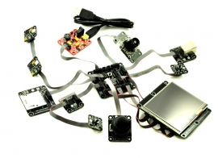

.NET Gadgeteer Intro

.NET Gadgeteer that was initiated by Microsoft Research and taken to production by GHI Electronics in the year 2011. .NET Gadgeteer had a great few year run, where it was loved for its plug-and-play mainboard and modules.
Tip
We will refer to .NET Gadgeteer as Gadgeteer throughout the rest of the documentation.
The core of .NET Gadgeteer is .NET Micro Framework (NETMF). Like Gadgeteer, NETMF is no longer evolved by Microsoft and left for the community. Learn more about NETMF
Sadly, and after 5 years of building modules and mainboards, GHI Electronics had to announce the EOL for Gadgeteer; however, the Gadgeteer hardware can still be used with TinyCLR OS.
External resources:
- Microsoft's .NET Gadgeteer website (down) http://www.gadgeteer.com/
- Microsoft's NETMF website (outdated) http://www.netmf.com/
Most of the Gadgeteer ecosystem is open source:
- Microsoft's .NET Gadgeteer Core
- GHI Electronics' Software sources and Hardware design files
- The Gadgeteer graphical designer was never made available by Microsoft.
Socket Map
The magic of Gadgeteer is in its socket map (copy the map from here https://www.ghielectronics.com/docs/305/gadgeteer-sockets-quick-reference)
Using .NET Gadgeteer
To use the .NET Gadgeteer legacy software, install:
- Visual Studio 20013 (community edition is also supported)
- Unzip and install netmfvs2013.vsix and MicroFramewrokSDK.msi from here
- Microsoft's Gadgeteer Core
- GHI Electronics' NETMF SDK. The latest is recommended.
The Gadgeteer for Beginners guide is a good starting point.
Tip
You can only use Visual Studio 2013, not a newer edition, unless you are using your Gadgeteer hardware with TinyCLR OS.
With TinyCLR OS
All .NET Gadgeteer devices are still useable today, and with the latest technologies, thanks to efforts by GHI Electronics and the community.
It all started in this video!
This means you can still use all your beloved .NET Gadgeteer gear with TinyCLR OS.
The first step needed to use TinyCLR OS is to load the GHI Bootloader v2 onto your mainboard, then use that to load the TinyCLR OS firmware. Each mainboard product page includes the needed instructions. Once those are loaded, you can start blinking the debug LED, detailed in the next section.
Blinking the LED
Tip
If you have never used TinyCLR OS before, start here
This example will blink the debug LED. You only need to add a power module to your mainboard.
using System.Threading;
using GHIElectronics.TinyCLR.Devices.Gpio;
using GHIElectronics.TinyCLR.Pins;
class Program {
static void Main() {
var led = GpioController.GetDefault().OpenPin(FEZSpider.GpioPin.DebugLed);
led.SetDriveMode(GpioPinDriveMode.Output);
while(true) {
led.Write(GpioPinValue.High);
Thread.Sleep(200);
led.Write(GpioPinValue.Low);
Thread.Sleep(200);
}
}
}
Tip
The complete pin mapping is made available through GHIElectronics.TinyCLR.Pins. You should not need to use any schematics.
Replace FEZSpider with your mainboard's name.
Adding Gadgeteer Modules
You are now ready to start adding modules.